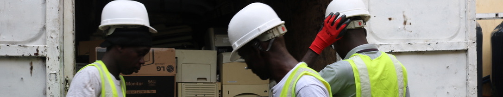
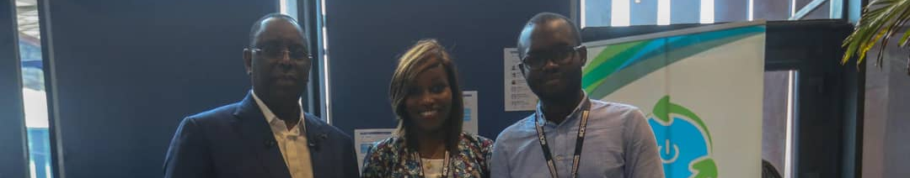
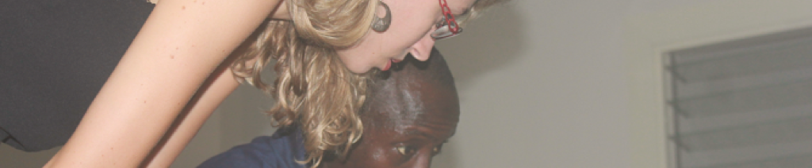

A propos
SetTIC
Vous propose plusieurs services:
- Inventaire
- Audit déchets
- Sensibilisation du personnel
- Collecte, Revalorisation et Recyclage de DEEE
- Mise à disposition de BOX de collecte pour cartouches d’impression (CartBOX), Pile (PileBOX) et petits déchets électroniques (D3BOX)
A pour objectif de:
- Donner une seconde vie à vos Équipements Électriques et Électroniques via la revalorisation
- Contribuer à encadrer légalement et sécuriser le secteur du recyclage des DEEE où le marché parallèle est très actif et ce au détriment de l’environnement et de la santé de ses acteurs
- Créer des emplois localement et participer au développement économique du pays
- Répondre au besoin d’entreprises, d'administrations et d'institutions publiques en matière de gestion des DEEE
- Fournir un accompagnement en matière de gestion des déchets via le conseil, la formation et la sensibilisation
Travailler avec SetTIC, c'est opter pour une solution simple et responsable de gestion des DEEE.